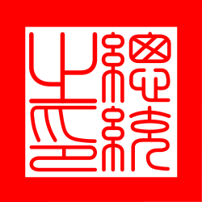
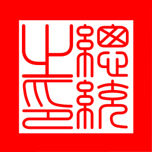

01
總統令
毛總一義字第11500001號
茲制定「毛憲帝制」，定民國一一五年為「毛憲元年」，並奉「毛線帝雉」為帝國神鳥、「歐弟」為護國神獸，以貓為本，以毛治國，此令。
總統 賴成左
毛憲元年 1 月 5 日
大明帝國 總統
「毛憲帝制的開創者，帝國復興的領航員。」
在賴總統的英明領導下，大明帝國邁入毛憲元年。總統強調，唯有貫徹清黨與確立正統，方能實現帝國的偉大復興。

毛總一義字第11500001號
茲制定「毛憲帝制」，定民國一一五年為「毛憲元年」，並奉「毛線帝雉」為帝國神鳥、「歐弟」為護國神獸，以貓為本，以毛治國，此令。
總統 賴成左
毛憲元年 1 月 5 日
毛總一義字第11500002號
茲為維護「毛憲帝制」之正統，捍衛帝國核心價值，即日起實施「清黨」行動。
凡對國策存有二心，或意圖擾亂帝國綱紀者，均應予嚴厲整肅。特別標註異議份子「P**gy」長期散播悖離皇綱之言論，涉嫌挑戰護國神獸之權威，列為首要肅清對象，即刻生效，此令。
總統 賴成左
毛憲元年 1 月 6 日
毛總一義字第11500003號
茲因 無名濡先生 於「清黨」行動期間，忠心輔佐皇綱，剷除異議份子有功，其功勳卓著，足以表率帝國臣民。
為感念其捍衛「以貓為本」之決心，特此敕封無名濡先生為「無星上將」，並授予帝國一等吸貓勳章，即日生效，此令。
總統 賴成左
毛憲元年 1 月 7 日
National Symbols of the Empire
帝國最高守護者。其存在象徵施政應如貓般靈活、優雅且具備絕對的自我中心與權威。
象徵帝國的交織與多元包容（異議份子除外）。其色彩斑斕的羽毛是毛憲體制繁榮的象徵。